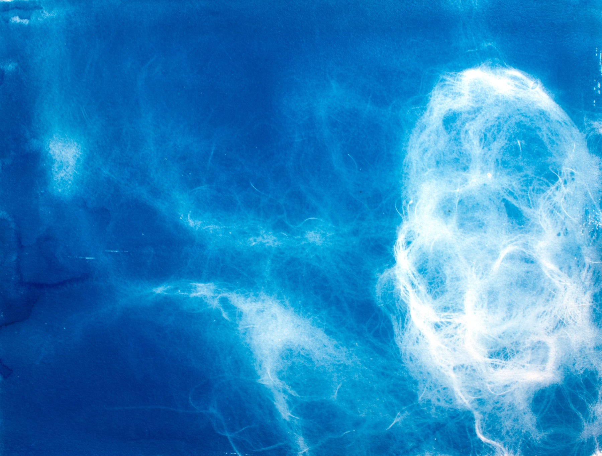
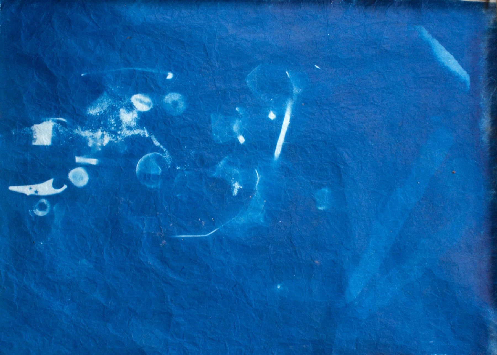

← Portfolio


climate
"The shade of blue created in a cyanotype is affected by the quality of light, and the time of day it was exposed."
An ongoing series capturing cyanotype impressions of specific places. Verstappen visited bodies of water in Banff and Toronto, making images from shoreline materials. Each piece was washed in water drawn from its location and dried before being preserved — a record of a particular landscape, season, and day.

